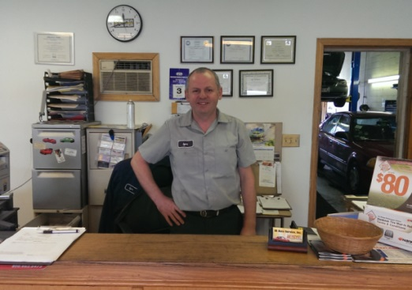

About Us
I.D. Auto Service was founded in August 2003. It is a family owned and operated company. We do complete automotive repair and service of passenger cars and light trucks, no matter what make or model they are, import or domestic. For complete information on what services we provide, you can click here.
What can you expect when you bring your vehicle to our business?
We are proud to offer:
- Your car will be serviced by completely ASE-certified Master Technician
- Cleanest automotive facility with modern equipment
- Most repairs done the same day
- The most sincere warranty in automotive service: 12 month/12,000 mi.
- We use only high quality parts for your car.
- For your convenience we have a very nice looking office with a comfortable waiting area.

The owner of the company, Igor Duhanov, is a completely certified ASE Master Auto Technician. He has over 30 years of experience in the automotive field.

1211 Estes Unit #1 Gurnee IL, 60031
Office Phone: (847) 775-2721
Office Phone: (847) 775-2721